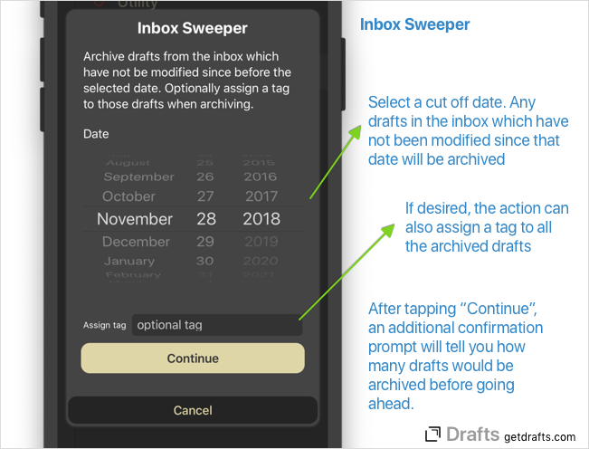

Sometimes your inbox gets away from you and it’s nice to clear out some of the older items you know you are not likely to process and get things back under control.
The Inbox Sweeper is an example action which can archive older drafts from your inbox to get a clean start.

To use:
- Install the Inbox Sweeper from the Action Directory by clicking the “Install” link on a device with Drafts installed.
- Run the action.
- Select a date. Any drafts in the inbox older than the selected date will be archived. The action defaults to one month ago.
- Optionally select a tag to assign the drafts as they are archived.
- “Continue”. You will get an additional confirmation prompt telling how many drafts would be affected before the action completes.